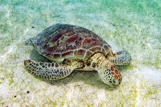
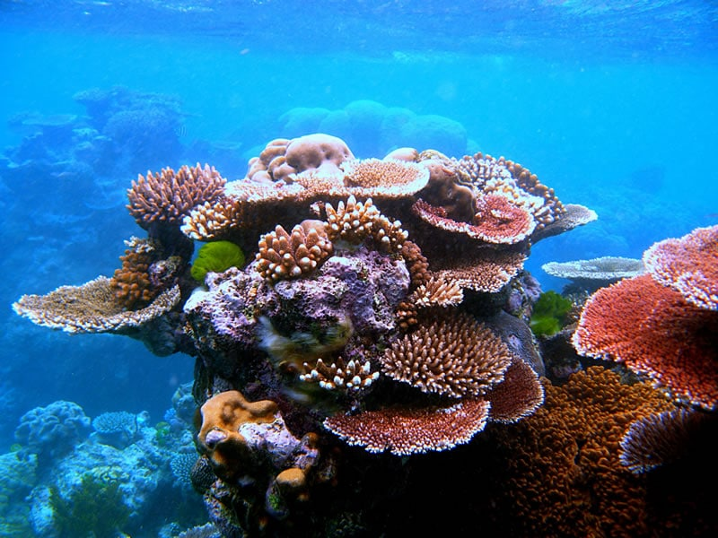

Ecology
The Great Barrier Reef supports an extraordinary diversity of life, including many vulnerable or endangered species, some of which may be endemic to the reef system.[43][44]
Thirty species of cetaceans have been recorded in the Great Barrier Reef, including the dwarf minke whale, Indo-Pacific humpback dolphin, and the humpback whale. Large populations of dugongs live there.[44][45][46] More than 1,500 fish species live on the reef, including the clownfish, red bass, red-throat emperor, and several species of snapper and coral trout.[45] Forty-nine species mass spawn, while eighty-four other species spawn elsewhere in their range.[47] Seventeen species of sea snake live on the Great Barrier Reef in warm waters up to 50 metres (160 ft) deep and are more common in the southern than in the northern section. None found in the Great Barrier Reef World Heritage Area are endemic, nor are any endangered.[48]
Six species of sea turtles come to the reef to breed: the green sea turtle, leatherback sea turtle, hawksbill turtle, loggerhead sea turtle, flatback turtle, and the olive ridley. The green sea turtles on the Great Barrier Reef have two genetically distinct populations, one in the northern part of the reef and the other in the southern part.[49] Fifteen species of seagrass in beds attract the dugongs and turtles,[45] and provide fish habitat.[30]: 133 The most common genera of seagrasses are Halophila and Halodule.[50
Saltwater crocodiles live in mangrove and salt marshes on the coast near the reef.[51] Nesting has not been reported, and the salt water crocodile population in the GBRWHA is wide-ranging but low density.[48] Around 125 species of shark, stingray, skates or chimaera live on the reef.[52][53] Close to 5,000 species of mollusc have been recorded on the reef, including the giant clam and various nudibranchs and cone snails.[45] Forty-nine species of pipefish and nine species of seahorse have been recorded.[48] At least seven species of frog inhabit the islands.[54]
215 species of birds (including 22 species of seabirds and 32 species of shorebirds) visit the reef or nest or roost on the islands,[30]: 450–451 including the white-bellied sea eagle and roseate tern.[45] Most nesting sites are on islands in the northern and southern regions of the Great Barrier Reef, with 1.4 to 1.7 million birds using the sites to breed.[55][56] The islands of the Great Barrier Reef also support 2,195 known plant species; three of these are endemic. The northern islands have 300–350 plant species which tend to be woody, whereas the southern islands have 200 which tend to be herbaceous; the Whitsunday region is the most diverse, supporting 1,141 species. The plants are propagated by birds.[54]
There are at least 330 species of ascidians on the reef system with the diameter of 1–10 cm (0.4–4 in). Between 300 and 500 species of bryozoans live on the reef.[53] Four hundred coral species, both hard corals and soft corals inhabit the reef.[45] The majority of these spawn gametes, breeding in mass spawning events that are triggered by the rising sea temperatures of spring and summer, the lunar cycle, and the diurnal cycle. Reefs in the inner Great Barrier Reef spawn during the week after the full moon in October, while the outer reefs spawn in November and December.[57] Its common soft corals belong to 36 genera.[58] Five hundred species of marine algae or seaweed live on the reef,[45] including thirteen species of genus Halimeda, which deposit calcareous mounds up to 100 metres (110 yd) wide, creating mini-ecosystems on their surface which have been compared to rainforest cover.[30]: 185